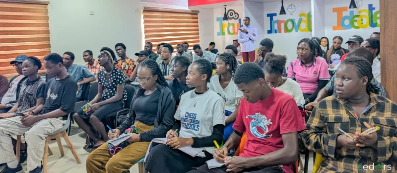

From problems to possibilities
Innovation starts with who has the problem, not with the technology.
Read takeaways →
APPLICATIONS ARE CURRENTLY CLOSED
12 WEEKS · BONNY ISLAND
NO COST TO SELECTED PARTICIPANTS
MENTOR-LED · PROJECT-BASED
EIGHT TRACKS TO CHOOSE FROM
DELIVERED BY CEDARS PRODUCTIVITY CENTRE
Innovation doesn’t have to begin with a groundbreaking idea. It can begin with a problem in front of you.
On Friday, 6 November 2026, participants in the Digital Innovation and Leadership Programme visited Catalyst Cove, the innovation centre of Nigeria LNG Limited. The visit gave them a close look at the mindset and practice of innovation.
Start where you are.
A simple problem in your immediate environment is a legitimate place to begin.
Question the assumptions.
Innovation begins with identifying the real problem, not with the first idea.
Learn through feedback.
Develop, experiment, test, then let what you learn change the next attempt.
In a session facilitated by Ambrose, participants explored how innovation works in practice. It starts with identifying real-world problems and questioning assumptions. Then it moves on to developing ideas, experimenting, testing solutions and learning through feedback.
Innovation doesn’t have to begin with a groundbreaking idea. It can begin with a simple problem in your immediate environment and a commitment to solving it.
The same thinking shapes what we are building at Cedars Productivity Centre. We believe digital skills and emerging technologies should do more than add to what people know. They should help people understand challenges, create practical solutions, unlock opportunities and improve lives.
DILP turns this belief into action. The programme brings together applied learning, human-centred innovation, AI-enabled problem-solving and practical solutions for community impact.
Our goal is to nurture critical thinkers, problem-solvers, innovators and builders who can use technology to create economic and social value.
Notice: what problem in my immediate environment have I stopped seeing?
Choose: which assumption behind it have I never actually checked?
Act: test one small change this week and write down what happened.
At your next check-in, ask: did the feedback change what I build next?
We thank NLNG and the Catalyst Cove team for this experience and for the opportunity to inspire our community.
Innovation starts with who has the problem, not with the technology.

Ideas are easy. Building something people come back to is the hard part.